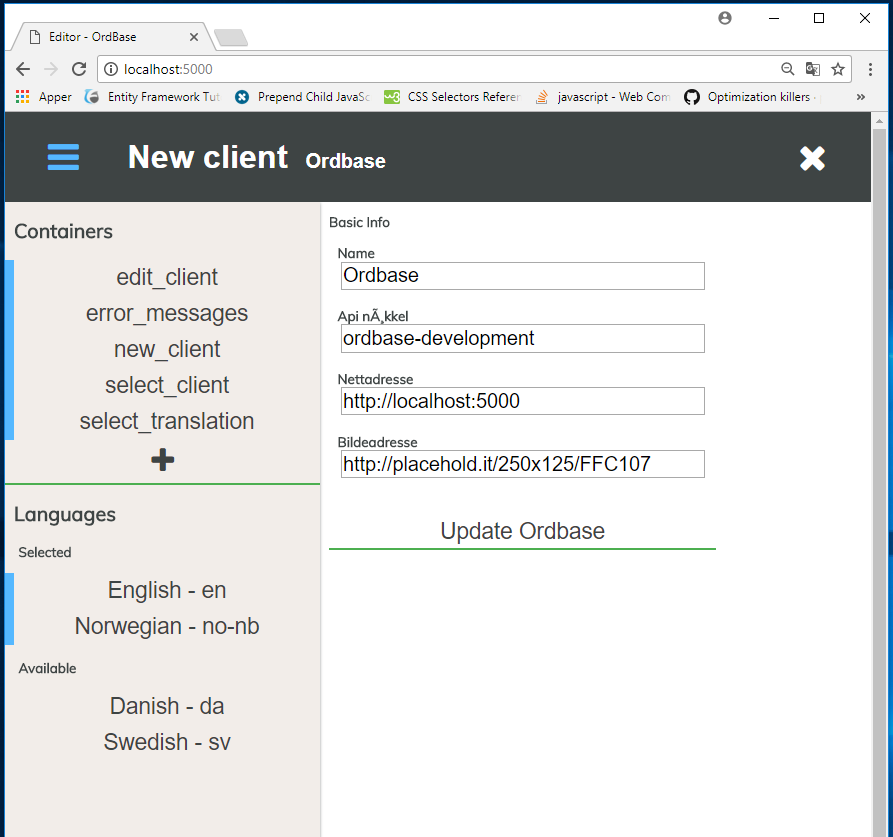

RestApi index
Last updated: 03.08.2017 by Jonas Solsvik
api/translation
GET - api/translationGET - api/translation/group
GET - api/translation/group/meta
GET - api/translation/keyvalue
**POST - api/translation**
**POST - api/translation/array**
**PUT - api/translation**
**PUT - api/translation/array**
**DELETE - api/translation**
**DELETE - api/translation/group**
api/client
**GET - api/client****GET - api/client/containers**
**GET - api/client/languages**
**POST - api/client**
**PUT - api/client**
**DELETE - api/client**
**POST - api/client/containers**
**POST - api/client/languages**
api/language
**GET - api/language****POST - api/language**
api/container
**GET - api/container**System diagram
Last updated: 03.08.2017 by Jonas Solsvik
_______________|_________________
| App |
|----------------------------------|
| App.js |
| loadSelectClient.js |
| loadNewClient.js |
| loadEditClient.js |
| loadSelectTranslation.js |
|__________________________________|
|
_______________|_________________
| |
| Route.js |
|__________________________________|
|
_______________|_________________
| |
| Fetch.js |
|__________________________________|
|
|
--------------- webpack babel es2016
|
_______________|_________________
| |
| Bundle.js |
|__________________________________|
|
______________|__________________
| |
| index.html |
|__________________________________|
|
|
----- Chrome 61 native (Chrome 60 with flags)
|
Web client |
- - - - - - - - - - - - - - - - - - - - - - - - - - - - - - - - - - - - - - - - - - - - - - - - - - - - - - - - - - - - - - - - Intranet
Web server |
|
------------ http://ordbase.fylkesmannen.local
|
_______________|_________________
| IIS Proxy server |
|----------------------------------|
| web.config |
|__________________________________|
|
|
-------------- dotnet run or http://localhost:5000
|
_______________|__________________
| .net core Kestrel server |
|----------------------------------|
| Program.cs |
|__________________________________|
|
_______________|__________________
| ASP MVC middleware |
|----------------------------------|
| Startup.cs |
|__________________________________|
|
_______________|__________________ __________________________________
| ASP MVC Controllers | | Model |
|----------------------------------| |----------------------------------|
| TranslationController.cs | | Translation.cs |
| ClientController.cs | | Client.cs |
| ContainerController.cs | | Container.cs |
| LanguageController.cs | | Container.cs |
|__________________________________| | TranslationDb.cs |
| |__________________________________|
_______________|__________________ |
| Repositories | ------- dotnet ef migrations add
|----------------------------------| |
| TranslationRepository.cs | _______________|________________________
| ClientRepository.cs | | Migrations |
| ContainerRepository.cs | |----------------------------------------|
| LanguageRepository.cs | | TranslationDbModelSnapshot.cs |
|__________________________________| |________________________________________|
| |
| |
------ DBContext -------- dotnet ef database update
| |
Web server | |
- - - - - - - - - - - - - - - - - - - - - - - - - - - - - - - - - - - - - - - - - - - - - - - - - - - - - - - - - - - - - - - - SQL
Sql database |
|
------- http://ordbase.fylkesmannen.sql and Connection string
|
______________ |__________________
| Microsoft SQL Express |
|__________________________________|
Model diagram
Gallery

